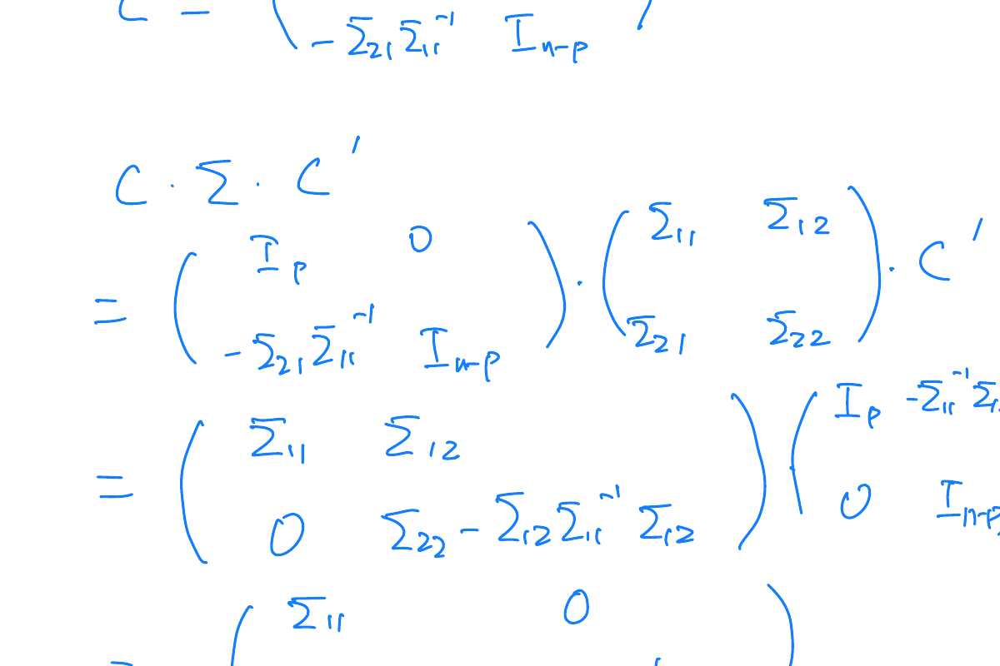

3 Multivariate Normal Distribution
3.1 Motivation
Consider the linear model: \[ y = X\beta + \epsilon, \quad \epsilon_i \sim N(0, \sigma^2) \]
We are often interested in the distributional properties of the response vector \(y\) and the residuals. Specifically, if \(y = (y_1, \dots, y_n)'\), we need to understand its multivariate distribution. \[ \hat{y} = Py, \quad e = y - \hat{y} = (I_n - P)y \]
3.2 Random Vectors and Matrices
Definition 3.1 (Random Vector and Matrix) A Random Vector is a vector whose elements are random variables. E.g., \[ x_{k \times 1} = (x_1, x_2, \dots, x_k)^T \] where \(x_1, \dots, x_k\) are each random variables.
A Random Matrix is a matrix whose elements are random variables. E.g., \(X_{n \times k} = (x_{ij})\), where \(x_{11}, \dots, x_{nk}\) are each random variables.
Definition 3.2 (Expected Value) The expected value (population mean) of a random matrix (or vector) is the matrix (or vector) of expected values of its elements.
For \(X_{n \times k}\): \[ E(X) = \begin{pmatrix} E(x_{11}) & \dots & E(x_{1k}) \\ \vdots & \ddots & \vdots \\ E(x_{n1}) & \dots & E(x_{nk}) \end{pmatrix} \]
\[ E\left(\begin{pmatrix} x_1 \\ \vdots \\ x_k \end{pmatrix}\right) = \begin{pmatrix} E(x_1) \\ \vdots \\ E(x_k) \end{pmatrix} \]
Definition 3.3 (Variance-Covariance Matrix) For a random vector \(x_{k \times 1} = (x_1, \dots, x_k)^T\), the matrix is:
\[ \text{var}(x) = \Sigma_x = \begin{pmatrix} \sigma_{11} & \sigma_{12} & \dots & \sigma_{1k} \\ \sigma_{21} & \sigma_{22} & \dots & \sigma_{2k} \\ \vdots & \vdots & \ddots & \vdots \\ \sigma_{k1} & \sigma_{k2} & \dots & \sigma_{kk} \end{pmatrix} \]
Where:
- \(\sigma_{ij} = \text{cov}(x_i, x_j) = E[(x_i - \mu_i)(x_j - \mu_j)]\)
- \(\sigma_{ii} = \text{var}(x_i) = E[(x_i - \mu_i)^2]\)
In matrix notation: \[ \text{var}(x) = E[(x - \mu_x)(x - \mu_x)^T] \] Note: \(\text{var}(x)\) is symmetric.
3.2.1 Derivation of Covariance Matrix Structure
Expanding the vector multiplication for variance: \[ (x - \mu_x)(x - \mu_x)' \quad \text{where } \mu_x = (\mu_1, \dots, \mu_n)' \] \[ = \begin{pmatrix} x_1 - \mu_1 \\ \vdots \\ x_n - \mu_n \end{pmatrix} (x_1 - \mu_1, \dots, x_n - \mu_n) \] This results in the matrix \(A = (a_{ij})\) where \(a_{ij} = (x_i - \mu_i)(x_j - \mu_j)\). Taking expectations yields the covariance matrix elements \(\sigma_{ij}\).
Definition 3.4 (Covariance Matrix (Two Vectors)) For random vectors \(x_{k \times 1}\) and \(y_{n \times 1}\), the covariance matrix is: \[ \text{cov}(x, y) = E[(x - \mu_x)(y - \mu_y)^T] = \begin{pmatrix} \text{cov}(x_1, y_1) & \dots & \text{cov}(x_1, y_n) \\ \vdots & \ddots & \vdots \\ \text{cov}(x_k, y_1) & \dots & \text{cov}(x_k, y_n) \end{pmatrix} \] Note that \(\text{cov}(x, x) = \text{var}(x)\).
Definition 3.5 (Correlation Matrix) The correlation matrix of a random vector \(x\) is: \[ \text{corr}(x) = \begin{pmatrix} 1 & \rho_{12} & \dots & \rho_{1k} \\ \vdots & \ddots & \vdots \\ \rho_{k1} & \rho_{k2} & \dots & 1 \end{pmatrix} \] where \(\rho_{ij} = \text{corr}(x_i, x_j)\).
Relationships: Let \(V_x = \text{diag}(\text{var}(x_1), \dots, \text{var}(x_k))\). \[ \Sigma_x = V_x^{1/2} \rho_x V_x^{1/2} \quad \text{and} \quad \rho_x = (V_x^{1/2})^{-1} \Sigma_x (V_x^{1/2})^{-1} \] Similarly for two vectors: \[ \Sigma_{xy} = V_x^{1/2} \rho_{xy} V_y^{1/2} \]
3.3 Properties of Mean and Variance
We can derive several key algebraic properties for operations on random vectors.
- \(E(X + Y) = E(X) + E(Y)\)
- \(E(AXB) = A E(X) B\) (In particular, \(E(AX) = A\mu_x\))
- \(\text{cov}(x, y) = \text{cov}(y, x)^T\)
- \(\text{cov}(x + c, y + d) = \text{cov}(x, y)\)
- \(\text{cov}(Ax, By) = A \text{cov}(x, y) B^T\)
- Special case for scalars: \(\text{cov}(ax, by) = ab \cdot \text{cov}(x, y)\)
- \(\text{cov}(x_1 + x_2, y_1) = \text{cov}(x_1, y_1) + \text{cov}(x_2, y_1)\)
- \(\text{var}(x + c) = \text{var}(x)\)
- \(\text{var}(Ax) = A \text{var}(x) A^T\)
- \(\text{var}(x_1 + x_2) = \text{var}(x_1) + \text{cov}(x_1, x_2) + \text{cov}(x_2, x_1) + \text{var}(x_2)\)
- \(\text{var}(\sum x_i) = \sum \text{var}(x_i)\) if independent.
\[ \begin{aligned} \text{cov}(Ax, By) &= E[(Ax - A\mu_x)(By - B\mu_y)^T] \\ &= A E[(x - \mu_x)(y - \mu_y)^T] B^T \\ &= A \text{cov}(x, y) B^T \end{aligned} \]
To prove \(E(AXB) = A E(X) B\): First consider \(E(Ax_j)\) where \(x_j\) is a column of \(X\). \[ E(Ax_j) = E\begin{pmatrix} a_1' x_j \\ \vdots \\ a_n' x_j \end{pmatrix} = \begin{pmatrix} E(a_1' x_j) \\ \vdots \\ E(a_n' x_j) \end{pmatrix} \] Since \(a_i\) are constants: \[ E(a_i' x_j) = E\left(\sum_{k=1}^p a_{ik} x_{kj}\right) = \sum_{k=1}^p a_{ik} E(x_{kj}) = a_i' E(x_j) \] Thus \(E(Ax_j) = A E(x_j)\). Applying this to all columns of \(X\): \[ E(AX) = [E(Ax_1), \dots, E(Ax_m)] = [AE(x_1), \dots, AE(x_m)] = A E(X) \] Similarly, \(E(XB) = E(X)B\).
\[ \text{var}(x_1 + x_2) = E[(x_1 + x_2 - \mu_1 - \mu_2)(x_1 + x_2 - \mu_1 - \mu_2)^T] \] Let centered variables be denoted by differences. \[ = E[((x_1 - \mu_1) + (x_2 - \mu_2))((x_1 - \mu_1) + (x_2 - \mu_2))^T] \] Expanding terms: \[ = E[(x_1 - \mu_1)(x_1 - \mu_1)^T + (x_1 - \mu_1)(x_2 - \mu_2)^T + (x_2 - \mu_2)(x_1 - \mu_1)^T + (x_2 - \mu_2)(x_2 - \mu_2)^T] \] \[ = \text{var}(x_1) + \text{cov}(x_1, x_2) + \text{cov}(x_2, x_1) + \text{var}(x_2) \]
3.4 The Multivariate Normal Distribution
3.4.1 Definition and Density
Definition 3.6 (Independent Standard Normal) Let \(z = (z_1, \dots, z_n)'\) where \(z_i \sim N(0, 1)\) are independent. We say \(z \sim N_n(0, I_n)\). The joint PDF is the product of marginals: \[ f(z) = \prod_{i=1}^n \frac{1}{\sqrt{2\pi}} e^{-\frac{z_i^2}{2}} = \frac{1}{(2\pi)^{n/2}} e^{-\frac{1}{2} z^T z} \] Properties: \(E(z) = 0\) and \(\text{var}(z) = I_n\) (Covariance is 0 for \(i \ne j\), Variance is 1).
Definition 3.7 (Multivariate Normal Distribution) A random vector \(x\) (\(n \times 1\)) has a multivariate normal distribution if it has the same distribution as: \[ x = A_{n \times p} z_{p \times 1} + \mu_{n \times 1} \] where \(z \sim N_p(0, I_p)\), \(A\) is a matrix of constants, and \(\mu\) is a vector of constants. The moments are:
- \(E(x) = \mu\)
- \(\text{var}(x) = AA^T = \Sigma\)
3.4.2 Geometric Interpretation
Using Spectral Decomposition, \(\Sigma = Q \Lambda Q'\). We can view the transformation \(x = Az + \mu\) as:
- Scaling by eigenvalues (\(\Lambda^{1/2}\)).
- Rotation by eigenvectors (\(Q\)).
- Shift by mean (\(\mu\)).
An Shinely App for Visualizing Bivariate Normal
Use the controls to construct the covariance matrix \(\boldsymbol{\Sigma}\) geometrically.
We define the transformation matrix \(\mathbf{A} = \mathbf{Q}\mathbf{\Lambda}^{1/2}\), where \(\mathbf{Q}\) is a rotation matrix and \(\mathbf{\Lambda}^{1/2}\) is a diagonal scaling matrix. The resulting covariance is \(\boldsymbol{\Sigma} = \mathbf{A}\mathbf{A}'\).
#| '!! shinylive warning !!': |
#| shinylive does not work in self-contained HTML documents.
#| Please set `embed-resources: false` in your metadata.
#| standalone: true
#| viewerHeight: 700
#| echo: false
library(shiny)
library(bslib)
library(shinyWidgets)
library(munsell)
library(scales)
library(tibble)
library(rlang)
library(ggplot2)
library(mvtnorm)
# --- 1. PRE-GENERATE FIXED Z POINTS ---
set.seed(123)
z_fixed <- matrix(rnorm(50 * 2), ncol = 2)
ui <- page_fillable(
theme = bs_theme(version = 5),
withMathJax(),
# --- ROW 1: CONTROLS (Compact Strip) ---
card(
class = "p-2",
layout_columns(
col_widths = c(3, 2, 2, 2, 2),
div(class = "text-center", tags$label(HTML("$$\\theta$$")),
noUiSliderInput("theta", label = NULL, min = 0, max = 360, value = 0, step = 5,
orientation = "horizontal", width = "100%", height = "10px", color = "#0d6efd")),
div(class = "text-center", tags$label(HTML("$$\\sqrt{\\lambda_1}$$")),
noUiSliderInput("L1", label = NULL, min = 0.5, max = 3, value = 2, step = 0.1,
orientation = "horizontal", width = "100%", height = "10px", color = "#ffc107")),
div(class = "text-center", tags$label(HTML("$$\\sqrt{\\lambda_2}$$")),
noUiSliderInput("L2", label = NULL, min = 0.5, max = 3, value = 1, step = 0.1,
orientation = "horizontal", width = "100%", height = "10px", color = "#adb5bd")),
div(class = "text-center", tags$label(HTML("$$\\mu_1$$")),
noUiSliderInput("mu1", label = NULL, min = -3, max = 3, value = 0, step = 0.5,
orientation = "horizontal", width = "100%", height = "10px", color = "#6c757d")),
div(class = "text-center", tags$label(HTML("$$\\mu_2$$")),
noUiSliderInput("mu2", label = NULL, min = -3, max = 3, value = 0, step = 0.5,
orientation = "horizontal", width = "100%", height = "10px", color = "#6c757d"))
)
),
# --- ROW 2: SIDE-BY-SIDE (Plot & Math) ---
layout_columns(
col_widths = c(8, 4), # 2/3 for Plot, 1/3 for Matrix
# Left: Visualization
card(
full_screen = TRUE,
plotOutput("contourPlot", height = "500px")
),
# Right: The Math (Larger Font)
card(
class = "p-3 d-flex justify-content-center", # Center content vertically
h5("Algebraic Representation", class = "mb-3 text-center"),
# Use CSS to make the font larger and monospaced
div(
style = "font-family: 'Courier New', monospace; font-size: 1.1rem; line-height: 1.4;",
verbatimTextOutput("matrixSide", placeholder = TRUE)
)
)
)
)
server <- function(input, output) {
data <- reactive({
theta_rad <- input$theta * pi / 180
Q <- matrix(c(cos(theta_rad), sin(theta_rad), -sin(theta_rad), cos(theta_rad)), 2, 2)
Lam_sqrt <- diag(c(input$L1, input$L2))
A <- Q %*% Lam_sqrt
Sigma <- A %*% t(A)
mu_vec <- c(input$mu1, input$mu2)
x_points <- z_fixed %*% t(A)
x_points[,1] <- x_points[,1] + mu_vec[1]
x_points[,2] <- x_points[,2] + mu_vec[2]
list(Q=Q, L=c(input$L1, input$L2), mu=mu_vec, Sigma=Sigma, A=A, points=as.data.frame(x_points))
})
output$matrixSide <- renderText({
M <- data()
A <- round(M$A, 2)
S <- round(M$Sigma, 2)
rho <- cov2cor(M$Sigma)[1,2]
# Formatted to fill vertical space comfortably
paste0(
"Linear Transform:\n",
"x = A z + μ\n\n",
"Matrix A:\n",
sprintf("[%4.1f %4.1f]\n", A[1,1], A[1,2]),
sprintf("[%4.1f %4.1f]\n", A[2,1], A[2,2]),
"\n",
"Covariance Σ:\n",
"(Σ = AA')\n",
sprintf("[%4.1f %4.1f]\n", S[1,1], S[1,2]),
sprintf("[%4.1f %4.1f]\n", S[2,1], S[2,2]),
"\n",
"Correlation:\n",
sprintf("ρ = %.3f", rho)
)
})
output$contourPlot <- renderPlot({
req(data())
M <- data()
grid_r <- seq(-6, 6, length.out = 60)
df_grid <- expand.grid(x = grid_r, y = grid_r)
df_grid$z <- dmvnorm(as.matrix(df_grid), mean = M$mu, sigma = M$Sigma)
v1 <- M$Q[,1] * M$L[1]; v2 <- M$Q[,2] * M$L[2]
axes <- tibble(x = M$mu[1], y = M$mu[2],
xend1 = M$mu[1] + v1[1], yend1 = M$mu[2] + v1[2],
xend2 = M$mu[1] + v2[1], yend2 = M$mu[2] + v2[2])
ggplot() +
geom_contour_filled(data = df_grid, aes(x, y, z = z), bins = 9, show.legend = FALSE) +
geom_point(data = M$points, aes(V1, V2), color = "black", size = 2, alpha = 0.7) +
geom_segment(data = axes, aes(x=x, y=y, xend=xend1, yend=yend1),
color = "#ffc107", linewidth = 1.5, arrow = arrow(length = unit(0.3,"cm"))) +
geom_segment(data = axes, aes(x=x, y=y, xend=xend2, yend=yend2),
color = "white", linewidth = 1.5, arrow = arrow(length = unit(0.3,"cm"))) +
coord_fixed(xlim = c(-6, 6), ylim = c(-6, 6)) +
theme_minimal() +
labs(x = "X", y = "Y")
})
}
shinyApp(ui, server)3.4.3 Probability Density Function
If \(\Sigma\) is positive definite, the PDF exists. We use the change of variable formula for \(x = Az + \mu\): \[ f_x(x) = f_z(g^{-1}(x)) \cdot |J| \] where \(z = A^{-1}(x - \mu)\) and \(J = \det(A^{-1}) = |A|^{-1}\).
\[ f_x(x) = (2\pi)^{-p/2} |A|^{-1} \exp \left\{ -\frac{1}{2} (A^{-1}(x-\mu))^T (A^{-1}(x-\mu)) \right\} \]
Using \(|\Sigma| = |AA^T| = |A|^2\) and \(\Sigma^{-1} = (AA^T)^{-1}\), we get: \[ f_x(x) = (2\pi)^{-p/2} |\Sigma|^{-1/2} \exp \left\{ -\frac{1}{2} (x-\mu)^T \Sigma^{-1} (x-\mu) \right\} \]
3.4.4 Moment Generating Function
Definition 3.8 (Moment Generating Function (MGF)) The MGF of a random vector \(x\) is \(M_x(t) = E(e^{t^T x})\). For \(x = Az + \mu\): \[ M_x(t) = E[e^{t^T(Az + \mu)}] = e^{t^T\mu} E[e^{(A^T t)^T z}] = e^{t^T\mu} M_z(A^T t) \] Since \(M_z(u) = e^{u^T u / 2}\): \[ M_x(t) = e^{t^T\mu} \exp\left( \frac{1}{2} t^T (AA^T) t \right) = \exp \left( t^T\mu + \frac{1}{2} t^T \Sigma t \right) \]
Key Properties:
Uniqueness: Two random vectors with the same MGF have the same distribution.
Independence: \(y_1\) and \(y_2\) are independent iff \(M_y(t) = M_{y_1}(t_1) M_{y_2}(t_2)\).
3.5 Construction and Linear Transformations
Theorem 3.1 (Constructing MVN Random Vector) Let \(\mu \in \mathbb{R}^n\) and \(\Sigma\) be an \(n \times n\) symmetric positive semi-definite (p.s.d.) matrix. Then there exists a multivariate normal distribution with mean \(\mu\) and covariance \(\Sigma\).
Proof: Since \(\Sigma\) is p.s.d., there exists \(B\) such that \(\Sigma = BB^T\) (e.g., via Cholesky). Let \(z \sim N_n(0, I)\) and define \(x = Bz + \mu\).
Theorem 3.2 (Linear Transformation Theorem) Let \(x \sim N_n(\mu, \Sigma)\). Let \(y = Cx + d\) where \(C\) is \(r \times n\) and \(d\) is \(r \times 1\). Then: \[ y \sim N_r(C\mu + d, C \Sigma C^T) \]
Proof: \(x = Az + \mu\) where \(AA^T = \Sigma\). \[ y = C(Az + \mu) + d = (CA)z + (C\mu + d) \] This fits the definition of MVN with mean \(C\mu + d\) and variance \(C \Sigma C^T\).
3.5.1 Corollaries
Corollary 3.1 (Marginals) Any subvector of a multivariate normal vector is also multivariate normal. If we partition \(x = (x_1', x_2')'\), we can use \(C = (I_r, 0)\) to show \(x_1 \sim N(\mu_1, \Sigma_{11})\).
Corollary 3.2 (Univariate Combinations) Any linear combination \(a^T x\) is univariate normal: \[ a^T x \sim N(a^T \mu, a^T \Sigma a) \]
Corollary 3.3 (Orthogonal Transformations) If \(x \sim N(0, I_n)\) and \(Q\) is orthogonal (\(Q'Q = I\)), then \(y = Q'x \sim N(0, I_n)\).
Corollary 3.4 (Standardization) If \(y \sim N_n(\mu, \Sigma)\) and \(\Sigma\) is positive definite: \[ \Sigma^{-1/2}(y - \mu) \sim N_n(0, I_n) \] Proof: Let \(z = \Sigma^{-1/2}(y - \mu)\). Then \(\text{var}(z) = \Sigma^{-1/2} \Sigma \Sigma^{-1/2} = I_n\).
3.6 Independence
Theorem 3.3 (Independence in MVN) Let \(y \sim N(\mu, \Sigma)\) be partitioned into \(y_1\) and \(y_2\). \[ \Sigma = \begin{pmatrix} \Sigma_{11} & \Sigma_{12} \\ \Sigma_{21} & \Sigma_{22} \end{pmatrix} \] Then \(y_1\) and \(y_2\) are independent if and only if \(\Sigma_{12} = 0\) (zero covariance).
1. Independence \(\implies\) Covariance is 0: This holds generally for any distribution. \[ \text{cov}(y_1, y_2) = E[(y_1 - \mu_1)(y_2 - \mu_2)'] = 0 \]
2. Covariance is 0 \(\implies\) Independence: This is specific to MVN. We use MGFs. If \(\Sigma_{12} = 0\), the quadratic form in the MGF splits: \[ t^T \Sigma t = t_1^T \Sigma_{11} t_1 + t_2^T \Sigma_{22} t_2 \] The MGF becomes: \[ M_y(t) = \exp(t_1^T \mu_1 + \frac{1}{2} t_1^T \Sigma_{11} t_1) \times \exp(t_2^T \mu_2 + \frac{1}{2} t_2^T \Sigma_{22} t_2) \] \[ M_y(t) = M_{y_1}(t_1) M_{y_2}(t_2) \] Thus, they are independent.
3.7 Conditional Distributions
We often wish to find the distribution of a subvector \(y_2\) given the value of another subvector \(y_1\).
Lemma 3.1 (Constructing Independent Vectors) Let \(y \sim N_n(\mu, \Sigma)\) partitioned into \(y_1\) and \(y_2\). Define: \[ y_{2|1} = y_2 - \Sigma_{21}\Sigma_{11}^{-1}y_1 \] Then \(y_1\) and \(y_{2|1}\) are independent.
Proof: Consider the linear transformation: \[ \begin{pmatrix} y_1 \\ y_{2|1} \end{pmatrix} = C y = \begin{pmatrix} I & 0 \\ -\Sigma_{21}\Sigma_{11}^{-1} & I \end{pmatrix} \begin{pmatrix} y_1 \\ y_2 \end{pmatrix} \] The covariance matrix is \(C \Sigma C'\). The off-diagonal block is: \[ \text{cov}(y_1, y_{2|1}) = \Sigma_{11}(-\Sigma_{11}^{-1}\Sigma_{12}) + \Sigma_{12} = -\Sigma_{12} + \Sigma_{12} = 0 \] Since covariance is zero, they are independent.

Theorem 3.4 (Conditional Distribution Theorem) The conditional distribution of \(y_2\) given \(y_1\) is multivariate normal: \[ y_2 | y_1 \sim N(\mu_{2|1}, \Sigma_{22|1}) \] where:
Conditional Mean: \(E(y_2 | y_1) = \mu_2 + \Sigma_{21}\Sigma_{11}^{-1}(y_1 - \mu_1)\)
Conditional Variance: \(\text{var}(y_2 | y_1) = \Sigma_{22} - \Sigma_{21}\Sigma_{11}^{-1}\Sigma_{12}\)
Proof: Write \(y_2 = y_{2|1} + \Sigma_{21}\Sigma_{11}^{-1}y_1\). Conditional on \(y_1\), the term \(\Sigma_{21}\Sigma_{11}^{-1}y_1\) is constant. Since \(y_{2|1}\) is independent of \(y_1\), its conditional distribution is simply its marginal distribution. Thus, the mean shifts by the constant term, and the variance remains that of \(y_{2|1}\) (the Schur complement).
Let \(\begin{pmatrix} y_1 \\ y_2 \end{pmatrix} \sim N \left( \begin{pmatrix} 1 \\ 2 \end{pmatrix}, \begin{pmatrix} 2 & 1 \\ 1 & 4 \end{pmatrix} \right)\). Find the distribution of \(y_1 | y_2\).
\(\mu_{1|2} = \mu_1 + \sigma_{12}\sigma_{22}^{-1}(y_2 - \mu_2) = 1 + 1(4)^{-1}(y_2 - 2) = 0.5 + 0.25y_2\)
\(\sigma_{1|2}^2 = \sigma_{11} - \sigma_{12}\sigma_{22}^{-1}\sigma_{21} = 2 - 1(1/4)1 = 1.75\)
So \(y_1 | y_2 \sim N(0.5 + 0.25y_2, 1.75)\).
3.7.1 Variance Decomposition
The Law of Total Variance states: \[ \text{var}(y_2) = E[\text{var}(y_2 | y_1)] + \text{var}[E(y_2 | y_1)] \] In the MVN case:
\(E[\text{var}(y_2 | y_1)] = \Sigma_{22|1}\) (constant variance).
\(\text{var}[E(y_2 | y_1)] = \Sigma_{21}\Sigma_{11}^{-1}\Sigma_{12}\) (explained variance). Summing these returns the total variance \(\Sigma_{22}\).
3.8 Partial and Multiple Correlation
Definition 3.9 (Partial Correlation) The partial correlation between elements \(y_i\) and \(y_j\) given a set of variables \(x\) is derived from the conditional covariance matrix \(\Sigma_{y|x}\): \[ \rho_{ij|x} = \frac{\sigma_{ij|x}}{\sqrt{\sigma_{ii|x} \sigma_{jj|x}}} \] where \(\sigma_{ij|x}\) are elements of \(\Sigma_{y|x} = \Sigma_{yy} - \Sigma_{yx}\Sigma_{xx}^{-1}\Sigma_{xy}\).
Definition 3.10 (Multiple Correlation (\(R^2\))) For a scalar \(y\) and vector \(x\), the squared multiple correlation is the proportion of variance of \(y\) explained by the conditional mean: \[ \rho_{y|x}^2 = \frac{\text{var}(E(y|x))}{\text{var}(y)} = \frac{\Sigma_{yx} \Sigma_{xx}^{-1} \Sigma_{xy}}{\sigma_{yy}} \]